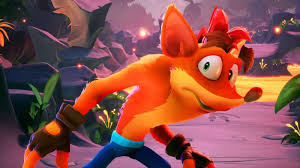
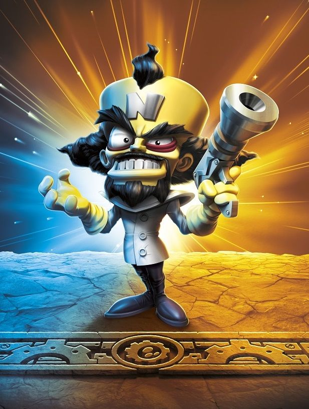
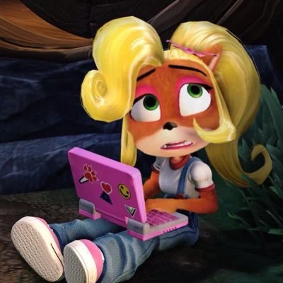

-

CRASH
Crash Bandicoot è il protagonista della serie di videogiochi omonima. Un marsupiale antropomorfo agile, forte e testardo, impegnato a sconfiggere il malvagio Dottor Neo Cortex con la sua mossa "spin attack" e il suo umorismo contagioso. Un'icona pop amata da tanti, simbolo di coraggio e divertimento nel mondo dei videogiochi.
-

DR. NEO CORTEX
Dr. Neo Cortex, il genio malvagio di Crash Bandicoot, ossessionato dal dominio del mondo e dalla creazione di un esercito di mutanti. Intelligente, megalomane e sarcastico, è un antagonista iconico e divertente.
-

AKU AKU
Aku Aku, spirito guardiano e maschera tiki, è il saggio protettore di Crash Bandicoot. Con il suo potere e la sua frase iconica "Booga Booga!", guida e incoraggia Crash nella sua lotta contro il male. Un personaggio amato per la sua amicizia e il suo ruolo fondamentale nella serie.
-

UKA UKA
Uka Uka, antagonista di Aku Aku e alleato di Cortex, rappresenta il male nella serie Crash Bandicoot. Con poteri oscuri e un carattere manipolatore, ostacola Crash nel suo cammino verso la vittoria. Un personaggio temibile dall'aspetto sinistro e dalla frase iconica "Uka Uka!".
-

COCO
Coco, la sorella minore di Crash, è un genio della tecnologia che combatte il male con il suo intelletto e le sue invenzioni. Intelligente, coraggiosa e determinata, è un personaggio amato dai fan e una dimostrazione che l'intelligenza può essere un'arma potente.